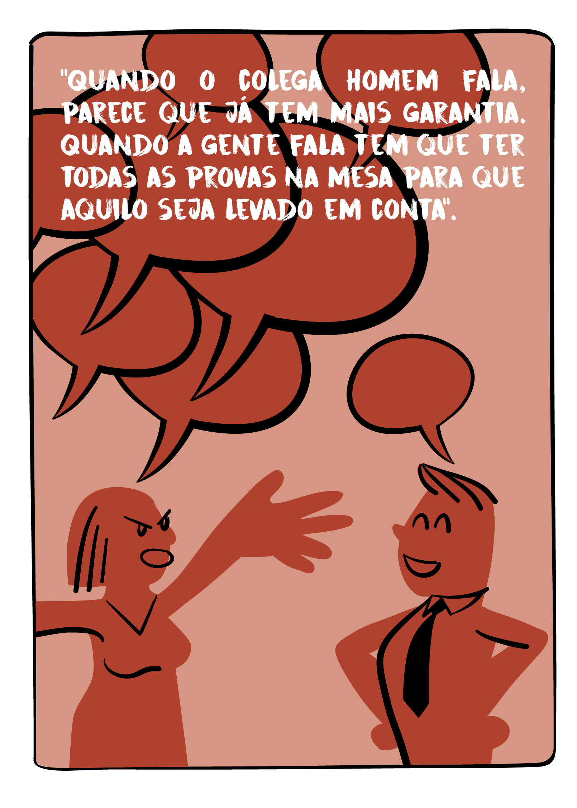
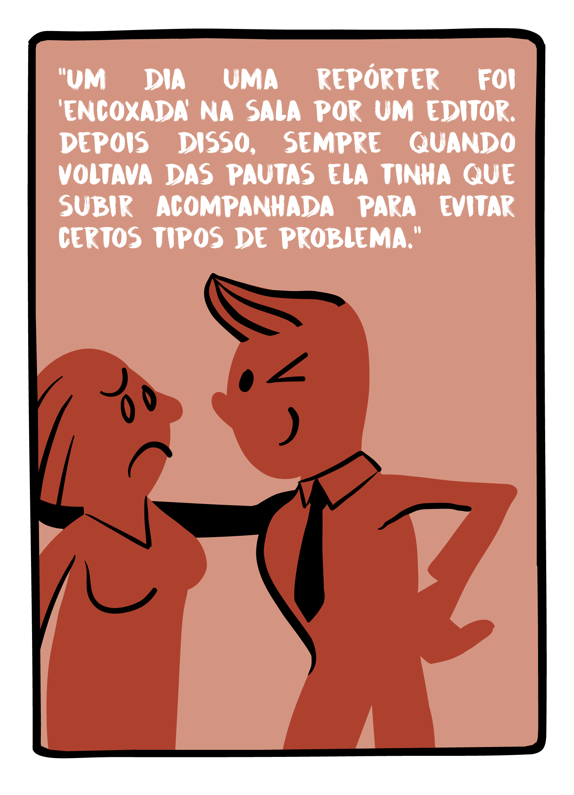
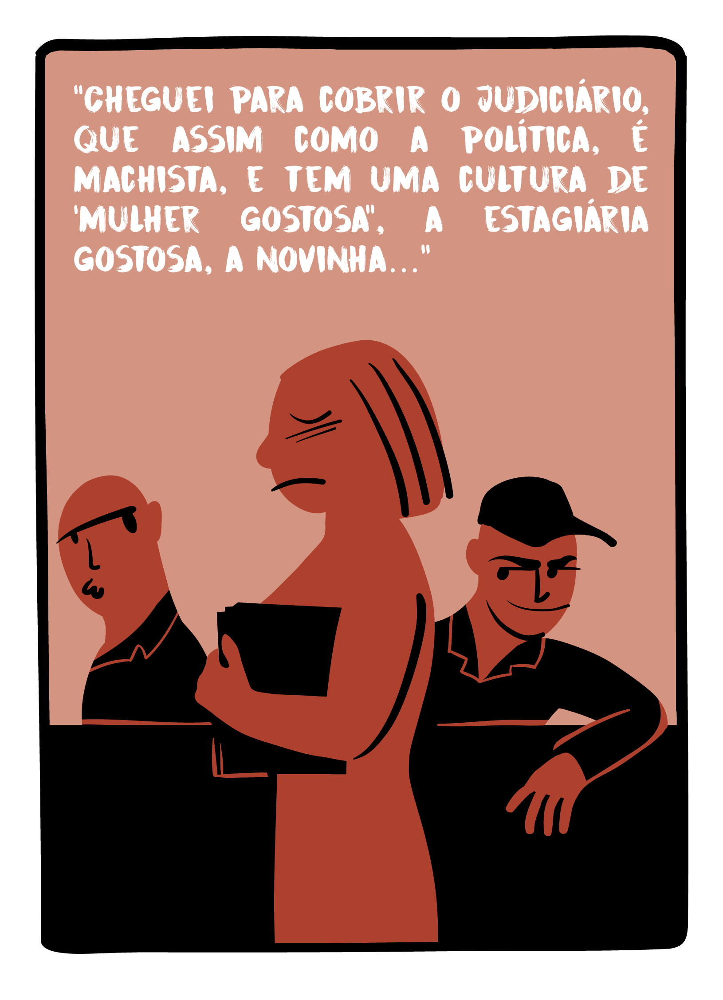
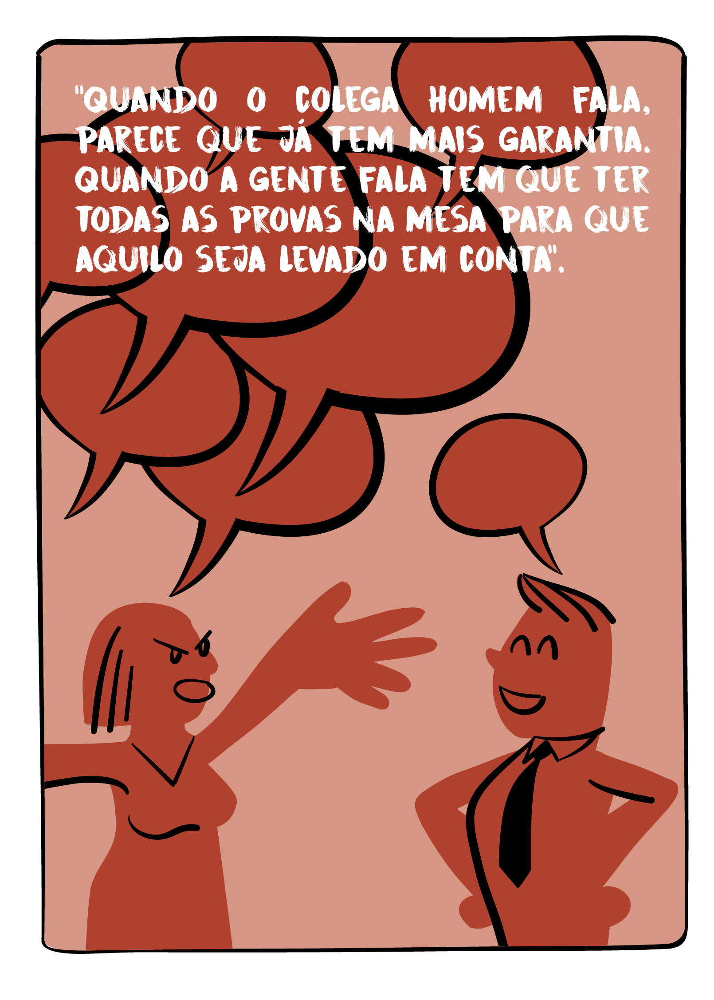
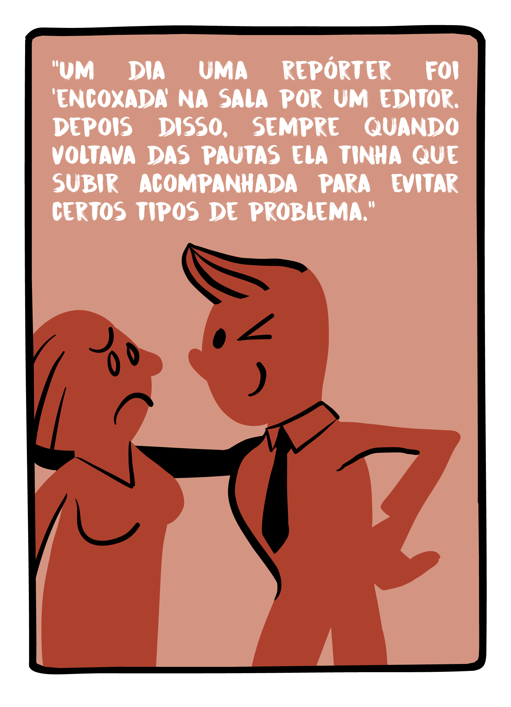
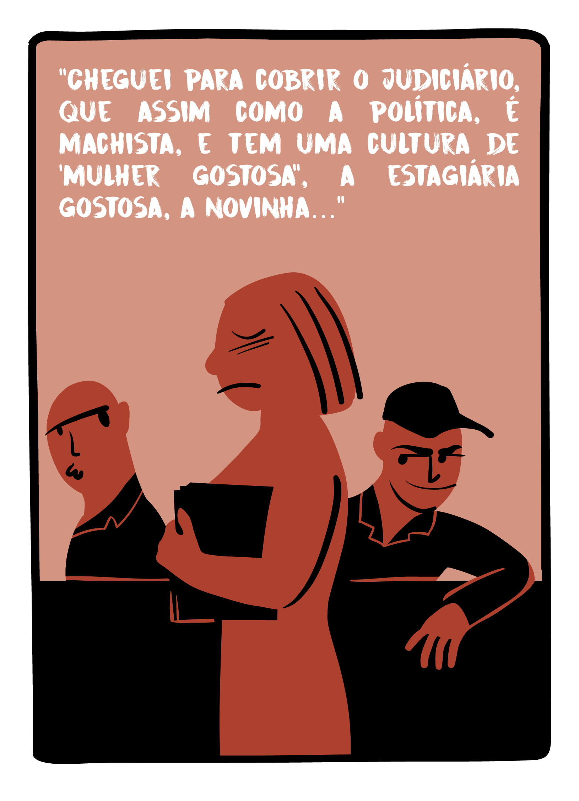

RECOMENDAÇÕES
Os resultados da pesquisa mostram que há um longo caminho a percorrer para que a igualdade de gênero se estabeleça no jornalismo profissional. Algumas recomendações simples podem acelerar a transição para um período de justiça com todas as repórteres, editoras e trabalhadoras da imprensa brasileira:
Os veículos devem produzir cartilhas para funcionários e colaboradores definindo o assédio cometido por uma fonte e indicando os procedimentos a serem adotados pelas repórteres quando forem vítimas desses atos.
Todos os repórteres devem ser orientados a tratar do tema do assédio junto a suas fontes; é especialmente importante ressaltar o caráter de violação à liberdade de expressão que essa conduta acarreta.
As redações devem organizar grupos de monitoramento da diversidade de gênero nas redações; esse grupo deve ter um canal de comunicação direto com a direção do veículo e a missão de produzir relatórios periódicos com análise tanto da cobertura, para identificar desequilíbrios no gênero das fontes ouvidas, quanto da composição da redação, para orientar possíveis novas contratações.
As redações devem criar um canal de comunicação interno para que vítimas de abuso e assédio possam fazer a denúncia formal.
Os veículos devem investir em capacitação de todos os repórteres em temas de diversidade; há cursos, palestras, debates e webinars disponíveis que podem auxiliar no combate a este tipo de violência.
As redações devem encarar como pautas relevantes todas as investidas inapropriadas de fontes sobre jornalistas mulheres. Estampar o assédio às trabalhadoras, bem como dedicar espaço a reportagens sobre diversidade de gênero é um passo importante para desestimular o abuso.
 




